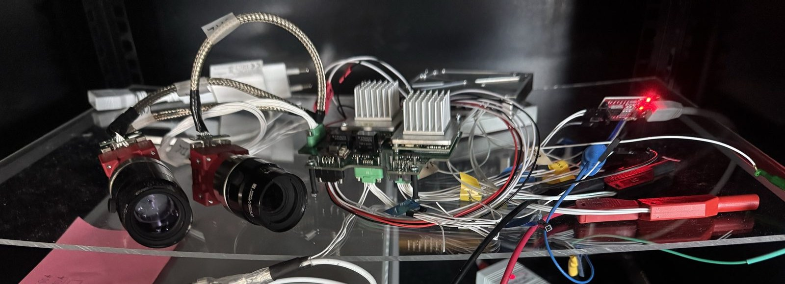
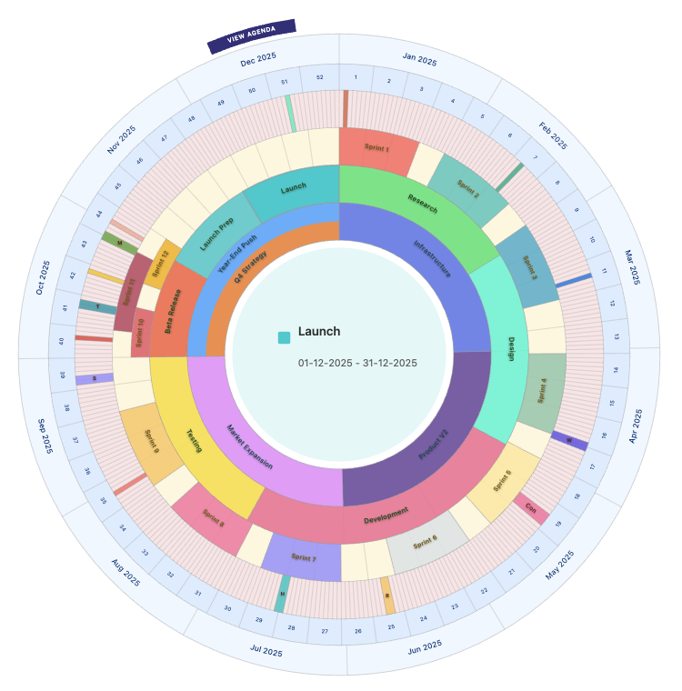
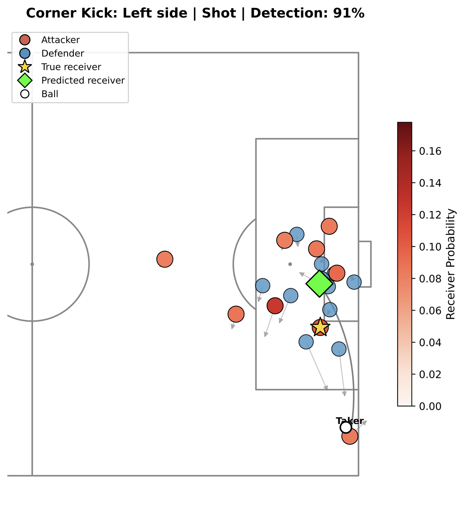

Mahmood Seoud
I write software for a student satellite, maintain an open source timeline library, and do machine learning research.
CubeSat camera controller
- What
- Software that runs the camera on a student satellite
- For
- DISCOSAT, 2025 to present
- Medium
- Embedded C, raw BayerRG frames, real-time telemetry
- Link
- discosat.dk
Picture: DISCO-2 mission render, over the North Sea and Denmark.

This is what a camera sensor records.
Each pixel on a sensor only measures one colour: red, green or blue, in a repeating pattern with twice as many greens. This is the picture from the top of the page stored that way, zoomed in far enough to see the pixels.
Zoomed out you can recognise the picture again. It looks dark and green because every pixel still has only one of its three colour values.
To get a normal picture, the two missing colours at each pixel are estimated by averaging the neighbouring pixels that did measure them. The line moving down the frame is that step being applied.
The finished frame
At DISCOSAT I work on the camera controller, which is written in embedded C. It handles raw BayerRG frames like this one and sends telemetry in real time.
This is a simulation that runs in your browser on the mission render, at 1280 by 960 pixels with bilinear interpolation. It is not real flight data and it is not the code on the satellite.

satDeploy
After DISCO-2 launched, we could not say for certain which versions of our software were running on it. Updates had been copied over by hand, and rebuilding the same setup on the ground took weeks.
I wrote satDeploy so that does not happen again. Every upload to the satellite is versioned, checked against a SHA-256 hash, and can be rolled back with one command. If a transfer does not finish during one pass over the ground station, it continues on the next pass.
My MSc thesis measured the problem. I built an instrument that drops a set share of the packets on the flatsat link and then checks the file that arrived. With the existing upload path, every one of the 25 uploads over a lossy link arrived corrupt and was still reported as a success. In the same test, satDeploy completed every upload at up to 20% packet loss, and two of three at 30%.
20% of the packets dropped on purpose, and every file satDeploy uploaded still arrived intact.
- What
- Versioned software deployment for small satellites, with hash checks and rollback
- For
- DISCO-2, and my MSc thesis at ITU, 2026
- Medium
- C, libcsp, CAN bus, SQLite

Circalify
A JavaScript library that draws a year as a wheel, with the months around the edge and one ring for each kind of activity. It has no dependencies and draws with SVG. It is published on npm, and it is the one project here that people I have never met use.
- What
- Library for circular year timelines
- For
- Open source under the MIT licence, 2025 to present
- Medium
- JavaScript, SVG
Corner kicks
Can you tell from where the players are standing whether a corner kick will end in a shot? I tried it first on broadcast video, with 4,836 clips, and the model did no better than a coin flip.
Then I used player tracking data from 143 corners and a graph neural network. That worked a little: an AUC of 0.687, where 0.5 is chance. Most of what the model picked up was how fast the players were moving.
- What
- Predicting whether a corner kick leads to a shot
- For
- Research project, 2026
- Medium
- Python, graph neural networks, broadcast video, tracking data
- Link
- GitHub

Scratches
This system takes a photo of a LEGO brick and highlights the scratches on its surface. I built it with three other students during the summer school at SDU.
- What
- Automatic scratch detection for LEGO quality control
- For
- SDU Elite Robotics Summer School, August 2025. Team of four
- Medium
- AnomalyDINO, Python, computer vision
- Link
- Programme


Record
| When | What | Where | Note |
|---|---|---|---|
| 2025 to present | Satellite Software Developer | DISCOSAT | Camera controller and deployment software for the DISCO-2 student satellite. |
| August 2025 | Elite Robotics Summer School | University of Southern Denmark | A three week programme with 50 students from five continents. |
| 2024 to 2026 | MSc Computer Science | IT University of Copenhagen | Thesis: Measuring Software-Upload Integrity under Loss on the CubeSat Space Protocol. |
| 2022 to present | AI Solutions Developer | PeopleNet | Built the SharePoint chatbot and led the migration from Azure to the OpenAI API. |
| 2024 | Conference paper, COPA 2024 | Read the paper | Building Towards a Distributed, Dynamic Solution to the Santa Claus Problem. With David Marchant. |
| 2023 to 2025 | SysMentor | GitHub | Simulators for learning virtual memory and caches, built with a fellow student. |
| 2021 to 2024 | BSc Computer Science | University of Copenhagen | Thesis: Mesh Grid Networks. |

Get in touch
That's me, run through the same simulation as the satellite picture. If you want to talk about satellites, embedded systems or machine learning, send me an email.
- What
- Mahmood Seoud, computer scientist
- For
- Satellite software, open source, machine learning
- Medium
- Embedded C, Python, React
- Link
- Email Mahmood